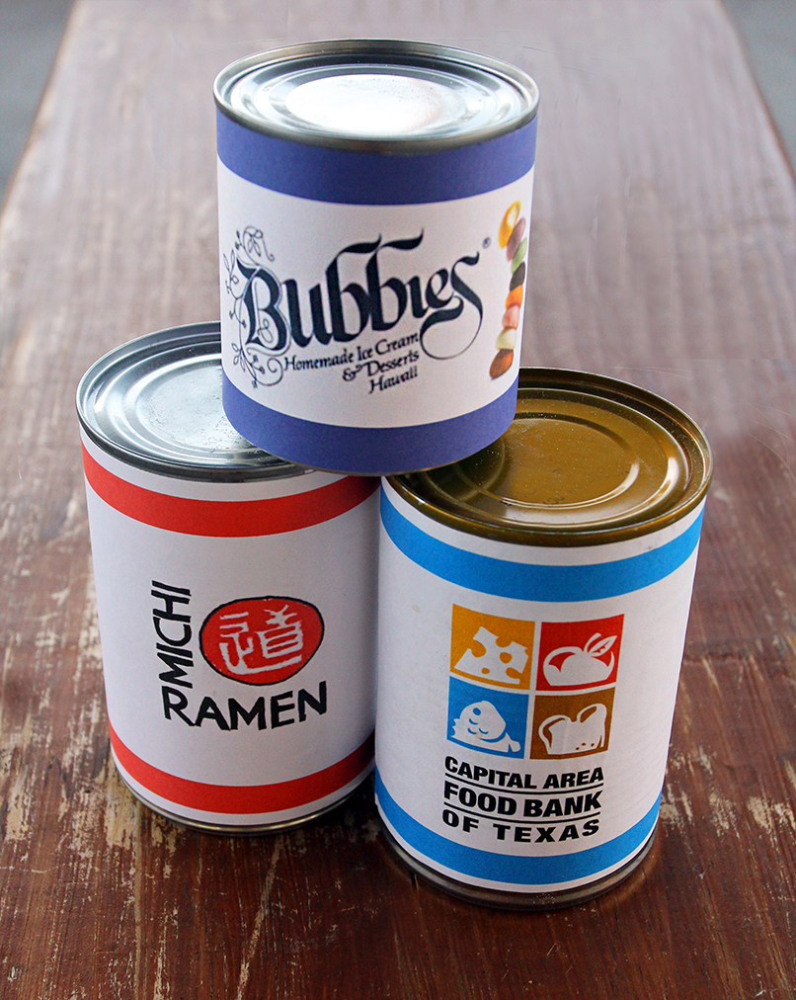

NOODLE BLOG

NO GOOD DEED GOES UN-MOCHI'D!
Posted by Michi Ramen - 02.26.15
No good deed goes un-mochi'd! Bring in a non-perishable food item to benefit the Capital Area Food Bank of Texas. In turn, receive a Bubbies Homemade Ice Cream and Dessets treat of your choice!